한국건설기술연구원 지반연구본부 세미나
2026. 11. 02.
필드로봇에서의
AI활용
이한민 책임연구원/실장
한국기계연구원 산업기계DX연구실

1
CONTENTS
목차
- 01피지컬AI 기술
- 02KIMM 피지컬AI 연구현황
- 03필드로봇 AI 기술
- 04KIMM 필드로봇 연구현황
2
1. AI, 로봇, 그리고 산업기계
산업마다 무인화와 자율화 요구가 먼저 있었고, ChatGPT 모멘트가 그것을 가속
3
2. 프로그래밍에서 학습으로의 전환
데이터와 경험으로 학습해, 더 다양한 작업과 환경에 대응
→
학습 중심
시연·경험→학습→실행
Figure Helix 2.5 (2026.09)
4
3. 행동 생성의 두 접근: VLA와 WAM
이해를 행동으로 연결하는 VLA · 미래를 예측해 행동하는 WAM
VLAVision-Language-Action
장면·언어 지시
로봇 상태
→
시각·언어
이해
→
행동 생성
Chef Robotics · Physical Intelligence Pi API
햄버거 조립
WAMWorld Action Model
장면·언어 지시
로봇 상태
→
미래 예측
활용
→
행동 생성
1X World Model · NEO
티슈 뽑기
5
4. 로봇 두뇌의 구성 방식
하나의 모델이 행동을 직접 출력하거나, 이해와 제어를 나누어 처리
행동 직접 출력Google DeepMind RT-2 (2023)

↑지시와 영상 입력
↑행동 토큰을 로봇 동작으로
영상과 지시를 받아 하나의 VLA 모델이 행동 토큰을 직접 출력
이해와 제어 역할 분담Figure Helix (2025.02)

이해·계획→
연속 제어→
System 2가 장면과 지시를 이해, System 1이 연속 동작으로 변환
6
5. 로봇 학습의 데이터 격차
인터넷에 축적된 지식에 비해, 로봇의 행동 경험은 부족
인터넷의 글과 그림
 웹 데이터 예시
웹 데이터 예시vs
로봇의 원격조작 경험
 로봇 시연 데이터 예시
로봇 시연 데이터 예시Goldberg (2025)의 당시 비교
약 10만 년
학습용 글과 그림을 사람이 읽고 보는 시간
약 1년
당시 최대 원격조작 데이터셋의 누적 기록 시간
로봇에는 관찰, 행동, 결과가 연결된 경험이 필요
7
6. 학습 데이터의 확보와 확장
로봇으로 수집하고, 사람에게서 배우고, 합성 데이터로 확장
1텔레오퍼레이션
Stanford, Mobile ALOHA (2024)
사람 조작으로 관찰과 행동 기록
+
2사람 영상 기반 학습
Figure, Project Go-Big (2025.09)
1인칭 영상으로 로봇 이동 학습
+
3합성 데이터 생성
NVIDIA, DexMimicGen (2024)
소수 시연을 시뮬레이션에서 증강
시뮬레이션 증강월드 모델 생성
다양한 경험으로 확장하고, 실제 작업으로 보정하고 검증
8
7. 현장 적용의 조건
현장의 기준은 안정적인 작업 완수, 지속적인 가동, 비용 대비 생산성
1작업 신뢰도
Telexistence, 일본 편의점 음료 진열
운영자 1명이 약 50대 감시
물건을 떨어뜨리는 등 예외 상황은
원격 운영자가 복구
→
2운영 지속성
Figure 02, BMW 스파턴버그 공장
누적 1,250시간+, 부품 9만 개+
가동률이 아닌 11개월 누적 실적
주요 고장 지점인 전완부 재설계
→
3경제성
Rosendin, 미국 태양광 현장시험
2인 작업조, 8시간 350–400장
3–4인 수작업조 대비 3배 속도
생산성 개선 사례, 투자회수는 별도
작업 성공뿐 아니라, 실패해도 복구하고 계속 운영할 수 있어야 현장 적용
9
14. 기계연 로봇 연구의 발전
휴머노이드, 필드로봇, 의료로봇으로 확장되는 기계 지능
10
15. 휴머노이드 카이로스
이동과 조작을 위한 로봇 플랫폼과 핵심부품 개발
2026 글로벌 기계기술 포럼 2026. 9. 7.
카이로스 V0.7 탈춤 시연
로드맵2027.4V1▶2030.4V2 초감각, 전신감각▶2035실용화
구동기
2.1kg으로
최대 192 N·m
전용 구동기 5종 자체 설계, 성능 20% 향상
로봇 핸드
핀셋을 쥐고
작은 부품까지
오랜 핸드 연구의 축적
촉각 피부 차별점
쓰다듬는 손길까지
감지
3축 촉각, 자가회복 피부
11
16. 로봇 작업지능과 학습 데이터
사람의 시연을 학습해 다양한 작업으로 확장
1시연 수집
2이해와 계획
3작업 수행 RoGeTA
데이터 팩토리
휴머노이드 여러 대의 동시 시연 수집 환경
▶
명령 이해언어·시각 모델
작업 계획순서 수립과 검증
동작 조합집기, 놓기, 복구
▶
12
19. 의료로봇
정밀조작과 원격제어로 의료 역량 확장
정밀조작최소침습 카테터 수술로봇
심장 모형 속 카테터
가는 관 끝을 떨림 없이 원하는 방향으로 조향
원격제어울릉도–대구 원격 초음파
의사 · 조작
⇄295 km왕복 지연
약 40 ms
로봇 · 초음파
의사의 손 조작을 먼 곳의 로봇이 따라 초음파 영상 획득
13
20. 디지털트윈
실제 장비와 가상 트윈을 실시간 연동해 학습·최적화
실제 장비디지털트윈
자율주행 트랙터 — 실차 작업을 트윈에서 실시간 관제
디지털트윈실제 설비
공작기계 자율제조 셀 — 설비·로봇 동작을 트윈과 연동
美 Digital Twin Consortium공식 테스트베드
MANDATE-R2R 이차전지 롤투롤 자율제조
실제 설비와 트윈을 실시간 연동, 다중 AI 에이전트가 공정을 스스로 최적화 · 2025.12 등록
14
Field Robotics
비정형·옥외 환경에서 일하는 모든 로봇
건설굴착기 · 휠로더 · 도저
농업트랙터 · 과수 모니터링
광업채굴 · 운반 · 정리
임업벌채 · 식재 · 운반
재난·국방탐색구조 · 정찰
해양해저 작업 · 양식
우주행성 탐사
도시 인프라하수도 · 터널 점검
15
현장의 4대 도전과제
불확실성 · 부분관측 · 동적 환경, 그리고 안전과 신뢰
01불확실성
토질 · 흙의 밀도 · 식생 · 기상이
매 작업마다 다름
02부분관측
지하 매설물 · 가려진 장애물
먼지로 인한 센서 저하
03동적 환경
작업이 진행될수록
지형 자체가 바뀜 (굴착·운반)
04안전과 신뢰
30톤 굴착기가
작업자 옆에서 움직임
16
스마트 건설기계 세부 기술
Perception · Planning · Control
Perception
Preprocessing
De-noising(Dust/Snow/Rain)
Terrain perception
Terrain mapping★Material classification★
Environment analysis
Semantic segmentation & object detectionTraversability analysis
State Estimation & Localization
Planning
Motion(bucket trajectory) planning★
Control
Bucket control (Operation)★
Hybrid control (Driving + Operation)
17
Perception – De-noising
Preprocessing › De-noising(Dust/Snow/Rain)
Lidar
De-dusting
(KIMM,
Ontario Tech)
18
Perception – Terrain Mapping
Terrain perception › Terrain mapping
Probabilistic Terrain Mapping (ETH)
19
Perception – Material Classification
Terrain perception › Material classification
Texture Classification (Baidu)
GPR based Object Detection (RodRadar)
20
Perception – Environment Analysis
Environment analysis › Semantic segmentation & object detection · Traversability analysis
Semantic Segmentation & Object Detection (ETH)
Terrain Traversability Mapping (Baidu)
21
Perception – State Estimation & Localization
LSTM-based Pose Estimation · Graph-based Sensor Fusion for Localization
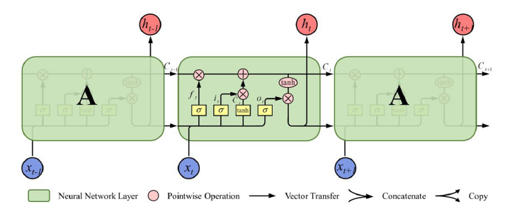
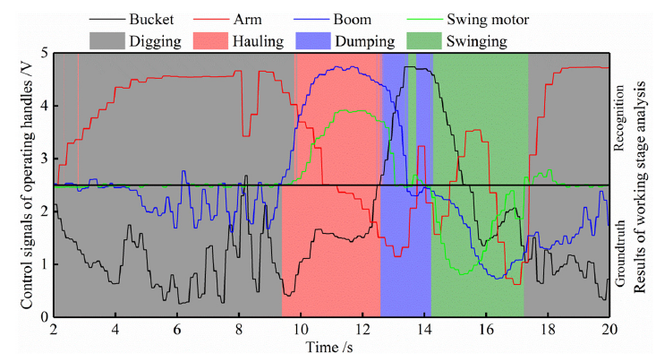
22
Planning - Task Planning (Global)
CCPP(Complete Coverage Path Planning) · Reinforcement Learning
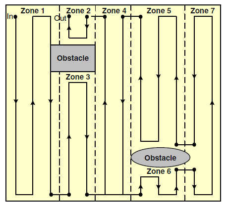
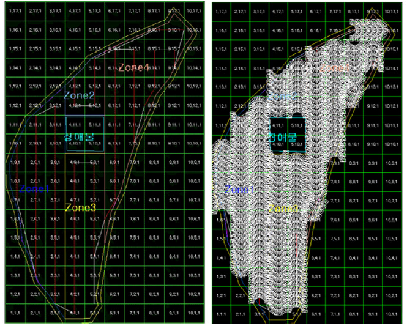
FCNCNN w/o FCNCNN w FCN
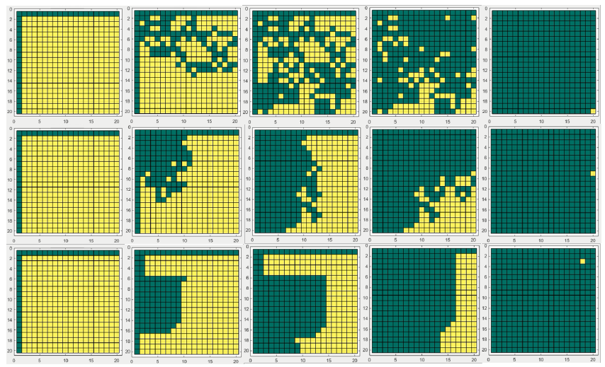
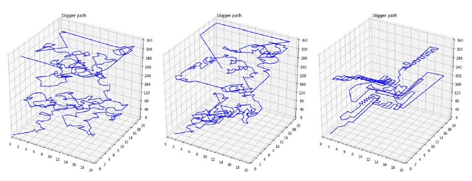
FCNCNN w/o FCNCNN w FCN
23
Planning – Task Planning (Global)
RL-based Dozer Path Planning · Policy Comparison
RL-based Dozer Path Planning (Bosch)
24
Planning - Task Planning (Hierarchical)
Hierarchical Task Planning · ETH · Baidu
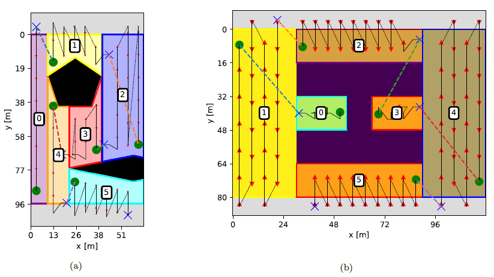
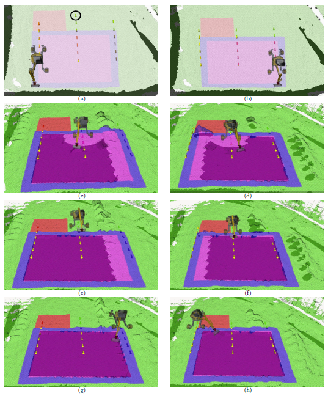
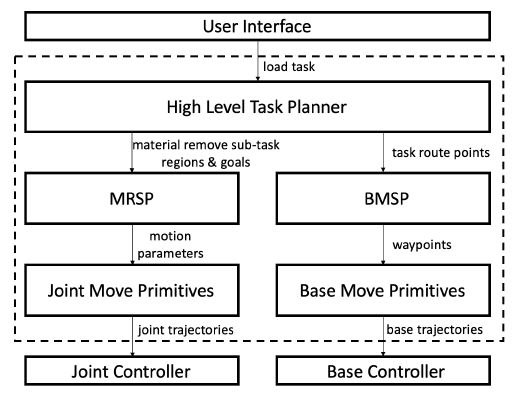
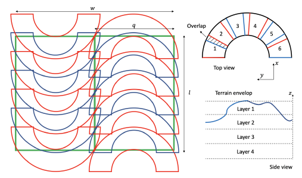
25
Planning - Task Planning (Hierarchical)
TaskNet : Neural Task Planner · Approach · Dig · Swing · Dump
TaskNet : Neural Task Planner (Baidu)
26
Planning - Task Planning (Local)
POA Planning — ETH · Baidu
POA Planning(ETH)
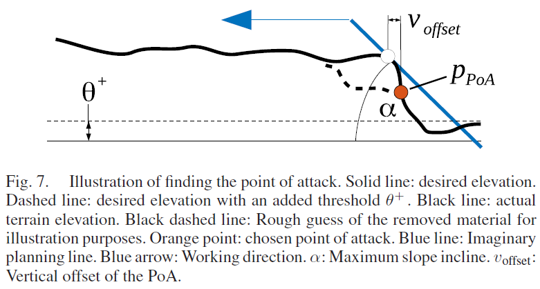
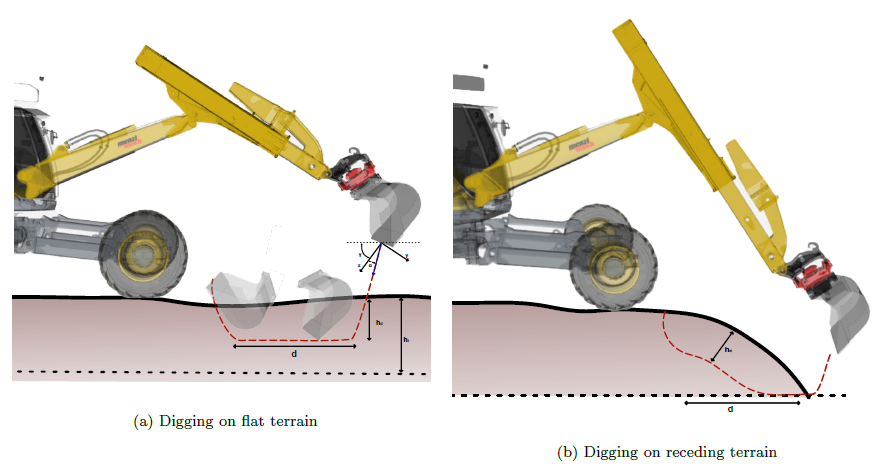
POA Planning(Baidu)
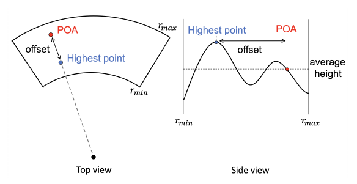
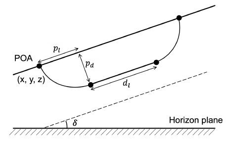
27
Planning – Bucket Trajectory Planning
토양 특성 파악이 힘들어 최적의 경로 생성의 어려움 존재
고려사항
- 에너지 효율성 (힘/토크 최소화)
- 버켓 Fill Factor 최대화
- 실린더 힘, 속도, 변위 제한사항 고려
- 토양 특성 파악이 힘들어 최적의 경로 생성의 어려움 존재
방법
- Parameter optimization
- Spline optimization
- Reachability-map based
- Deep Learning based
28
Planning – Bucket Trajectory Planning
Expert-emulating Excavation Trajectory Planning (SNU, Doosan Infracore)
29
Control
문제점 — 비선형, 비정형, 큰 외력
문제점
- 비선형, 비정형, 큰 외력
- 토양과의 접촉력
- 다양한 토양 재질 및 물성
- 비선형 유압시스템
방법
- PID-combined optimization control
- Sliding mode control
- Robust adaptive control
- Time-delay control
- Model predictive control
- Deep Learning based
30
Control
RL-based excavator control (ETH)
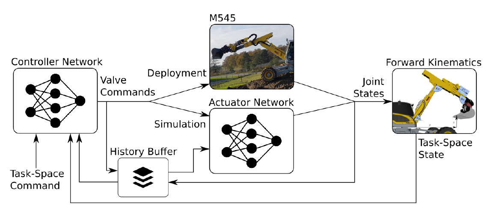
Reinforcement
Learning
Supervised
Learning
31
모방학습 기반의 End-to-End 자율작업
Physical Intelligence의 π 모델을 Actor가 굴착기 · 휠로더 자율작업에 적용
Actor 휠로더
Physical Intelligence · Pi API 공개 영상 (2026.10) — π 모델을 미세조정한 협력사 로봇들
첫 장면 · 왼쪽 위 노란 테두리: Actor × π 휠로더의 덤프트럭 상차 (Utah 상용 현장, 2배속)
데이터숙련 운전원의 시연
카메라로 현장 운전원의 작업과 조이스틱 조작을 함께 기록 · VR 원격조작 병행
모델π0.5 VLA 미세조정
카메라 영상 + 자연어 지시 → 조이스틱 4축 명령을 직접 출력 (관절 엔코더 없이)
π0.5는 Actor 굴착기 글(2026.3) 기준
적용굴착기 · 휠로더
굴착기 운전원 작업 2.5시간 학습 → 실제 현장 굴토
휠로더 운전석 무인으로 상용 현장 상차
32
오프로드 자율주행 환경인식 기술
센서 클리닝 · 노이즈 제거 · 주행 가능 영역 추정으로 야지 자율주행
기술적 성과
- 진흙/흙탕물 대응 가능 센서 클리닝 기술 개발
- 강설/강우/분진 노이즈 제거 정확도 85% 이상 달성
- 야지 주행 가능 영역 추정 실시간 성능 1.5배 이상 향상
강설 신호 제거 전 (원시 점군 데이터)
강설 신호 제거 후 (알고리즘 적용 후)
전면 영상
실시간 계산 속도 (ms)
라이다 강설 신호 제거 알고리즘 검증
33
협업 크레인 거더 자동운반
다중 크레인을 통합 제어해 교량 거더를 자동 운반
기술적 성과
다중 크레인 통합제어위치 오차 수평/수직 ±5 cm
라이다 기반 충돌방지환경탐지
Multi-RRT거더 이송 경로계획
축소 크레인자동운반 실증
환경탐지 센서와이어 센서크레인 1크레인 2붐 각도 센서붐 길이 센서거더 위치자세 센서거더관제 시스템크레인 GPS크레인 제어기스윙 각도 센서
협업 크레인 시스템 구성
34
굴착기·휠로더 원격제어
기계식 장비에 전자제어 retrofit kit를 달아 원격으로 제어
전자제어 인터페이스비례제어밸브 모듈 · 임베디드 컨트롤러 · GNSS · IMU · 압력계
작업장치 위치 제어굴착기 · 휠로더
정밀 압력 제어 · AI 고장진단Pilot 압력 hysteresis 제거
고장검출 정확도 90% 이상
35
원격제어 굴착기 시연
retrofit kit을 단 굴착기를 원격으로 조작
36
과수 예찰 자율 농업기계
자율주행 플랫폼에 매니퓰레이터와 병해충 탐지기를 탑재
37
과수 예찰 주행·자세 시험
노지 과수원 정밀 병해충 예찰을 위한 자율작업 기계
노지환경 정밀 병해충 예찰자율작업 농업기계 기술개발
8시간 연속 작업친환경 전원공급장치 개발
38
UAV·UGV 연동 시험
무인이동체 육해공 자율협력 — UAV와 UGV 연동 시험
39
숙련자 데이터 학습 파이프라인
숙련자 작업을 데이터로 수집·학습해 무인 굴착기 자율작업으로
데이터 수집
데이터 수집 플랫폼
→
라이다 점군 → 2D 그리드
데이터 수집 및 가공
라이다
그리드맵………
관절각
센서
카메라
작업매핑approach (x,y,z)dig (depth,drag)dump (x,y,z)
숙련자 작업 DB
approach (…)
dig (…)
dump (…)
⋮
인공지능 학습
라이다 2D 그리드 → 인공지능 모델 학습
자율작업 실증
AI 기반 무인 굴착기 자율작업 계획 및 제어
40
MC 굴착기 센서 구성
기존 굴착기에 인지·자세·유압 센서를 더한 데이터 수집 플랫폼
41
2D 그리드 작업계획 강화학습
2D 그리드 맵에서 Dig·Dump·Leveling 작업계획을 강화학습(PPO)으로
문제 정의
작업 환경20×40 그리드 맵 (실제 10 m×20 m)
한 그리드 0.5 m · 높이 −3 ~ 3 m
행동작업 시작 지점 (x 0~40, y 0~20)
Dig · Dump별 action space
보상 함수1회 굴착량 최대화
평균 높이 목표 도달 여부
이동거리 최소화
PPO
42
가상환경 자율작업 시스템 구조
Vortex Studio·ROS2 가상환경에서 인식 → 상위 계획 → 하위 제어
환경 인식
Environment PerceptionLiDAR · Camera
State Estimation경사계 · IMU · RTK-GPS · Encoder · 압력계 · TF
상위 계획High-level Planner
Grid MapperGrid Map GeneratorGrid Map InterpolationROI Extraction
RL ModuleDig ModelDump ModelLeveling Model
Task ManagerTask Combination PlannerTask Scheduler
Trajectory GeneratorDig · Dump ModuleSwing ModuleSwing-less Module
하위 제어Low-level Controller
Motion ControlAI-to-WorldCoordinate Transformation
Inverse KinematicsSolver
Actuator ControlBucketPID
BoomPID
ArmPID
SwingPID
43
가상환경 자율작업 1사이클
점군 인식부터 제어까지 가상환경에서 한 사이클 자율 수행
Point Cloud환경 인식
GridMap생성 및 추출
목표작업 영역인공지능 기반 설정
궤적 생성
자율 작업 제어
가상환경 · 1-cycle
44
토공 자율작업 가상환경 시뮬레이터 구축
토양환경 시뮬레이터 구축 — AGX 정밀 · Isaac sim 고속
AGX 기반의 토양환경 정밀 시뮬레이터
구축 및 실차 연동
AGX Dynamics
법면작업
FEE 기반의 Isaac sim
토양환경 고속 시뮬레이터 구축
Isaac Sim 4.5.0
굴착 연산
45
관로파기 현장 실증과 관제 UI
실제 굴착기의 관로파기 자율작업과 관제 화면
46
강화학습 실기 전이 재난분야 필드로봇 피지컬 AI
과제를 정의해 학습한 정책을 실제 4족 로봇까지 10일에 전이
시뮬레이션
② 강화학습 Isaac Gym · PPO
실기 · RBQ-10
③ 실기 전이 실시간 원본
47
필드 지형 강화학습 재난분야 필드로봇 피지컬 AI
험지를 지형 10종 × 10단계로 정의해 필드 보행 정책을 학습
필드 정책 v3 하나로 다양한 험지 시뮬레이션 성공률
48
선택기 기반 정책 전환 재난분야 필드로봇 피지컬 AI
지형을 보고 전문 정책을 실시간 전환, 나아가 하나의 모델로
지형 선택기 — 높이·재질 지도로 6칸 44 m 통과
흰색: 통합 정책만 (13 m에서 넘어짐) · 주황: 선택기
카메라 선택기 — 전방 깊이 영상으로 장애물 7칸 통과
흰색: 통합 정책만 (9 m 벽 앞 정체) · 주황: 선택기
전문 정책 6종통합·단차·진흙·벽·틈·계단
+
선택기지형 → 전문 정책
증류·재학습→
하나의 범용 모션 모델선택 단계 없는 공통 모델 (구상)
49
18. 필드로봇 피지컬 AI
공통 인지 모델 하나로 건설·농업·재난 장비를 자율화
인구절벽·위험환경 대응
AI 필드로봇 기술 개발
50
필드로봇 AI, 어떻게 적용할 것인가
필드로봇 AI 적용은 두 가지 방향으로
강화학습Reinforcement Learning시뮬레이터 속 시행착오로 배운다
- 토양 상호작용 시뮬레이터
- Sim-to-Real 갭 극복
- 보상과 작업 정의
모방학습Imitation Learning숙련자의 데이터를 따라 배운다
- 데이터 수집 방법
- 데이터 규모와 다양성
- 사전학습 모델 활용
공통안전성 · 신뢰성 — 안전 계층, 단계적 검증, 원격 감독
51